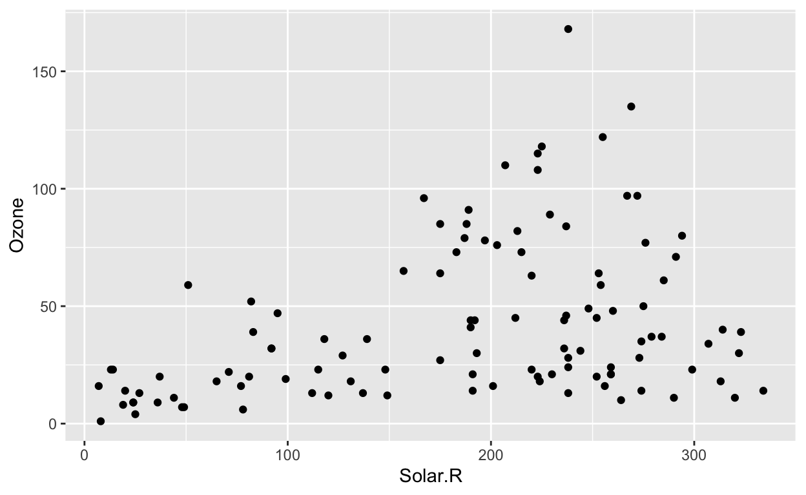

In this worksheet, we will discuss how to work with missing values in R.
We will be using the R packages tidyverse and naniar for basic data manipulation and plotting and for dealing with missing values, respectively.
# load required libraries
library(tidyverse)
library(naniar)We will be working with the dataset airquality, which contains daily air quality measurements in New York, May to September 1973. The data columns are mean ozone in parts per billion, solar radiation in Langleys, average wind speed in miles per hour, maximum temperature in Fahrenheit, and numeric month and day of the month.
airquality Ozone Solar.R Wind Temp Month Day
1 41 190 7.4 67 5 1
2 36 118 8.0 72 5 2
3 12 149 12.6 74 5 3
4 18 313 11.5 62 5 4
5 NA NA 14.3 56 5 5
6 28 NA 14.9 66 5 6
7 23 299 8.6 65 5 7
8 19 99 13.8 59 5 8
9 8 19 20.1 61 5 9
10 NA 194 8.6 69 5 10
11 7 NA 6.9 74 5 11
12 16 256 9.7 69 5 12
13 11 290 9.2 66 5 13
14 14 274 10.9 68 5 14
15 18 65 13.2 58 5 15
16 14 334 11.5 64 5 16
17 34 307 12.0 66 5 17
18 6 78 18.4 57 5 18
19 30 322 11.5 68 5 19
20 11 44 9.7 62 5 20
21 1 8 9.7 59 5 21
22 11 320 16.6 73 5 22
23 4 25 9.7 61 5 23
24 32 92 12.0 61 5 24
25 NA 66 16.6 57 5 25
26 NA 266 14.9 58 5 26
27 NA NA 8.0 57 5 27
28 23 13 12.0 67 5 28
29 45 252 14.9 81 5 29
30 115 223 5.7 79 5 30
31 37 279 7.4 76 5 31
32 NA 286 8.6 78 6 1
33 NA 287 9.7 74 6 2
34 NA 242 16.1 67 6 3
35 NA 186 9.2 84 6 4
36 NA 220 8.6 85 6 5
37 NA 264 14.3 79 6 6
38 29 127 9.7 82 6 7
39 NA 273 6.9 87 6 8
40 71 291 13.8 90 6 9
41 39 323 11.5 87 6 10
42 NA 259 10.9 93 6 11
43 NA 250 9.2 92 6 12
44 23 148 8.0 82 6 13
45 NA 332 13.8 80 6 14
46 NA 322 11.5 79 6 15
47 21 191 14.9 77 6 16
48 37 284 20.7 72 6 17
49 20 37 9.2 65 6 18
50 12 120 11.5 73 6 19
51 13 137 10.3 76 6 20
52 NA 150 6.3 77 6 21
53 NA 59 1.7 76 6 22
54 NA 91 4.6 76 6 23
55 NA 250 6.3 76 6 24
56 NA 135 8.0 75 6 25
57 NA 127 8.0 78 6 26
58 NA 47 10.3 73 6 27
59 NA 98 11.5 80 6 28
60 NA 31 14.9 77 6 29
61 NA 138 8.0 83 6 30
62 135 269 4.1 84 7 1
63 49 248 9.2 85 7 2
64 32 236 9.2 81 7 3
65 NA 101 10.9 84 7 4
66 64 175 4.6 83 7 5
67 40 314 10.9 83 7 6
68 77 276 5.1 88 7 7
69 97 267 6.3 92 7 8
70 97 272 5.7 92 7 9
71 85 175 7.4 89 7 10
72 NA 139 8.6 82 7 11
73 10 264 14.3 73 7 12
74 27 175 14.9 81 7 13
75 NA 291 14.9 91 7 14
76 7 48 14.3 80 7 15
77 48 260 6.9 81 7 16
78 35 274 10.3 82 7 17
79 61 285 6.3 84 7 18
80 79 187 5.1 87 7 19
81 63 220 11.5 85 7 20
82 16 7 6.9 74 7 21
83 NA 258 9.7 81 7 22
84 NA 295 11.5 82 7 23
85 80 294 8.6 86 7 24
86 108 223 8.0 85 7 25
87 20 81 8.6 82 7 26
88 52 82 12.0 86 7 27
89 82 213 7.4 88 7 28
90 50 275 7.4 86 7 29
91 64 253 7.4 83 7 30
92 59 254 9.2 81 7 31
93 39 83 6.9 81 8 1
94 9 24 13.8 81 8 2
95 16 77 7.4 82 8 3
96 78 NA 6.9 86 8 4
97 35 NA 7.4 85 8 5
98 66 NA 4.6 87 8 6
99 122 255 4.0 89 8 7
100 89 229 10.3 90 8 8
101 110 207 8.0 90 8 9
102 NA 222 8.6 92 8 10
103 NA 137 11.5 86 8 11
104 44 192 11.5 86 8 12
105 28 273 11.5 82 8 13
106 65 157 9.7 80 8 14
107 NA 64 11.5 79 8 15
108 22 71 10.3 77 8 16
109 59 51 6.3 79 8 17
110 23 115 7.4 76 8 18
111 31 244 10.9 78 8 19
112 44 190 10.3 78 8 20
113 21 259 15.5 77 8 21
114 9 36 14.3 72 8 22
115 NA 255 12.6 75 8 23
116 45 212 9.7 79 8 24
117 168 238 3.4 81 8 25
118 73 215 8.0 86 8 26
119 NA 153 5.7 88 8 27
120 76 203 9.7 97 8 28
121 118 225 2.3 94 8 29
122 84 237 6.3 96 8 30
123 85 188 6.3 94 8 31
124 96 167 6.9 91 9 1
125 78 197 5.1 92 9 2
126 73 183 2.8 93 9 3
127 91 189 4.6 93 9 4
128 47 95 7.4 87 9 5
129 32 92 15.5 84 9 6
130 20 252 10.9 80 9 7
131 23 220 10.3 78 9 8
132 21 230 10.9 75 9 9
133 24 259 9.7 73 9 10
134 44 236 14.9 81 9 11
135 21 259 15.5 76 9 12
136 28 238 6.3 77 9 13
137 9 24 10.9 71 9 14
138 13 112 11.5 71 9 15
139 46 237 6.9 78 9 16
140 18 224 13.8 67 9 17
141 13 27 10.3 76 9 18
142 24 238 10.3 68 9 19
143 16 201 8.0 82 9 20
144 13 238 12.6 64 9 21
145 23 14 9.2 71 9 22
146 36 139 10.3 81 9 23
147 7 49 10.3 69 9 24
148 14 20 16.6 63 9 25
149 30 193 6.9 70 9 26
150 NA 145 13.2 77 9 27
151 14 191 14.3 75 9 28
152 18 131 8.0 76 9 29
153 20 223 11.5 68 9 30We will first talk about how to replace specific values with NA when reading in data files. We prepare a simple comma-separated values (CSV) file with four columns, a, b, c, and d, which all use different ways to indicate a missing value.
simple_csv <- "
a, b, c, d
dog,#N/A,2,3
,3,NA,2
cat,5,3,-99
"In column a, second row, a field is completely empty, the line starts with a comma. In column b, first row, a missing value is indicated with #N/A. In column c, second row, a missing value is indicated with NA. In column d, fourth row, a missing value is indicated with -99.
If we read this input with read_csv(), we can see that the missing values in columns a and c are treated correctly but the others are not.
read_csv(simple_csv)# A tibble: 3 × 4
a b c d
<chr> <chr> <dbl> <dbl>
1 dog #N/A 2 3
2 <NA> 3 NA 2
3 cat 5 3 -99This outcome is determined by the na argument of read_csv(). By default, it is set to na = c("", "NA"), which handles empty cells and cells containing NA correctly. Modify this argument so that the entire table is read correctly.
read_csv(simple_csv, na = c("", "NA", "#N/A", "-99"))Also try other options to see what happens. For example, how does the result change if you remove the empty string from the na argument?
As an alternative to defining a global set of character strings that should be interpreted as missing values, you can make the substitution on a column-by-column basis, via the function replace_with_na_at() from the naniar package. This function allows you to specify one or more columns to work on and the specific data values that should be replaced with NA. The first argument to the function is the name of the data column on which you want to operate, given as a string, and the second argument is a logical expression determining whether replacement should be made or not, given as a formula. For example, the following code replaces -99 with NA in column d:
read_csv(simple_csv) %>%
replace_with_na_at("d", ~.x == "-99")# A tibble: 3 × 4
a b c d
<chr> <chr> <dbl> <dbl>
1 dog #N/A 2 3
2 <NA> 3 NA 2
3 cat 5 3 NANow use this same construct to replace the string #N/A with NA in column b.
read_csv(simple_csv) %>%
replace_with_na_at("b", ~.x == "#N/A")Do you see any remaining issues with this result?
When performing common summary calculations, such as calculating the mean of a numerical column, any missing values will cause the final result to be NA. For example, if you wanted to calculate the mean ozone value in the airquality dataset, you might see the following:
mean(airquality$Ozone)[1] NAIf you are certain that it is Ok to ignore missing values in your summary calculation, you can set the argument na.rm = TRUE inside the mean() function. Try this.
mean(airquality$Ozone) # not ignoring NA values
mean(airquality$Ozone, ___) # ignoring NA valuesmean(airquality$Ozone) # not ignoring NA values
mean(airquality$Ozone, na.rm = ___) # ignoring NA valuesmean(airquality$Ozone) # not ignoring NA values
mean(airquality$Ozone, na.rm = TRUE) # ignoring NA valuesNow try the same with the median, the maximum, and the sum of the Ozone column.
median(airquality$Ozone)
median(airquality$Ozone, na.rm = TRUE)median(airquality$Ozone)
median(airquality$Ozone, na.rm = TRUE)
max(airquality$Ozone)
max(airquality$Ozone, na.rm = TRUE)median(airquality$Ozone)
median(airquality$Ozone, na.rm = TRUE)
max(airquality$Ozone)
max(airquality$Ozone, na.rm = TRUE)
sum(airquality$Ozone)
sum(airquality$Ozone, na.rm = TRUE)To test whether a specific value is missing, you cannot use the standard comparison operator ==. Instead, you have to use the function is.na(). Try this out by filtering out all the rows in airquality for which the Ozone column contains a missing value.
airquality %>%
filter(___)airquality %>%
filter(is.na(___))airquality %>%
filter(is.na(Ozone))Now do the opposite. Retain only the rows for which the Ozone column does not contain a missing value.
airquality %>%
filter(___)airquality %>%
filter(!is.na(Ozone))We usually write NA when we want to indicate a missing value in R, regardless of the type of the variable we are working with (numerical, character string, logical, etc). However, there are typed missing values, and in some cases you need to use them explicitly. The most important ones are NA_character_ which represents a missing character string and NA_real_ which represents a missing numerical value.
You need to use typed NA values when writing code that expects input of a certain type. For example, in the following if_else() statement, becaue the second argument is of type character the third argument has to be as well. Try to run the following code, then fix it and run again.
# this does not work, try it, then fix it by using the appropriate NA value
if_else(TRUE, "result if true", NA)if_else(TRUE, "result if true", NA_character_)Let’s try this one more time but with a different data type.
# this does not work, try it, then fix it by using the appropriate NA value
if_else(TRUE, 42, NA)if_else(TRUE, 42, NA_real_)It is also useful to be able to visualize missing values easily. By default, when we make for example a scatter plot, missing values are simply not shown, and instead ggplot gives us a warning about missing values.
ggplot(airquality, aes(x = Solar.R, y = Ozone)) +
geom_point()Warning: Removed 42 rows containing missing values (geom_point).
This is not very helpful, because we don’t know where the values are missing. In this specific example, are they missing in the Ozone column or in the Solar.R column? And also, we may want to know whether missing values in one column coincide with particular values in the other column.
This can be addressed by using geom_miss_point() from the naniar package. Try this out.
ggplot(airquality, aes(x = Solar.R, y = Ozone)) +
geom_miss_point()The naniar package has various other methods to visualize missing values. For example, gg_miss_var() will provide an overall summary of how many missing values there are in each column in the data frame. Try this out.
gg_miss_var(airquality)